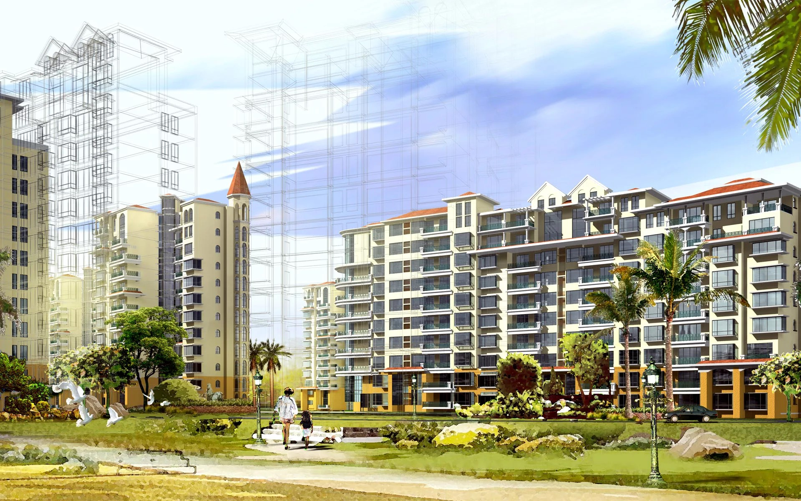

Arxitekturaviy loyhalash — bu binolar, inshootlar va boshqa arxitektura
ob'ektlarini yaratish jarayoni. Bu jarayon nafaqat estetik jihatlarni,
balki funksionallik, ergonomika, muhandislik yechimlari va atrof-muhit
bilan o'zaro ta'sirni ham o'z ichiga oladi. Arxitekturaviy loyhalashda
quyidagi asosiy bosqichlar mavjud: 1. **Tadqiqot va tahlil**: Mavjud
joyni, talablarni va foydalanuvchilar ehtiyojlarini o'rganish. 2.
**Konsepsiya ishlab chiqish**: Loyihaning asosiy g'oyasini va
tushunchasini belgilash. 3. **Chizmalar va modellar**: Binoning
chizmalarini va 3D modellarini yaratish. 4. **Loyihani tasdiqlash**:
Loyihani tegishli organlarga taqdim etish va ruxsat olish. 5. **Qurilish
jarayoni**: Loyihani amalga oshirish uchun qurilish ishlarini
boshqarish. Arxitekturaviy loyhalash san'at va ilm-fanning uyg'unligini
ifodalaydi va shaharlar, qishloqlar va muhitni shakllantirishda muhim
rol o'ynaydi.